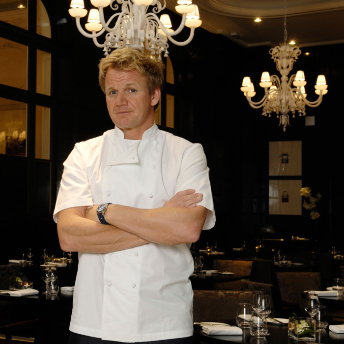

E - Extraversion préférée à l'introversion : les ESTP aiment interagir avec les autres. Ils « gagnent » de l'énergie par le contact avec autrui, à la différence des introvertis qui en perdent dans les mêmes situations et ont besoin de solitude pour récupérer, et aiment posséder un large cercle de connaissances.
N - Intuition préférée à la sensation : les ENFP sont davantage abstraits que concrets. Ils concentrent leur attention sur l'image globale d'une chose ou d'une situation plutôt que sur ses détails, sur le contexte plutôt que sur la chose en elle-même, sur les possibilités futures plutôt que sur les réalités immédiates.
T – Pensée (Thinking), préférée au sentiment : les ESTP placent les critères objectifs au-dessus des préférences personnelles. Lorsqu'ils prennent une décision, ils accordent une importance plus grande à la logique qu'à des considérations sociales et/ou passionnelles.
J – Jugement, préféré à la perception : les ESTJ planifient leurs activités et prennent des décisions rapidement. Leur tendance à prédire les probabilités d'une situation future suscite chez eux un certain self-control, qui peut sembler limitatif aux yeux des types préférant la perception.
| Steve Jobs | Gordon Ramsay |
|  |